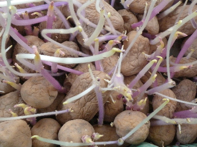
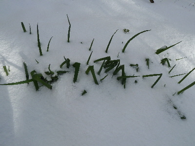
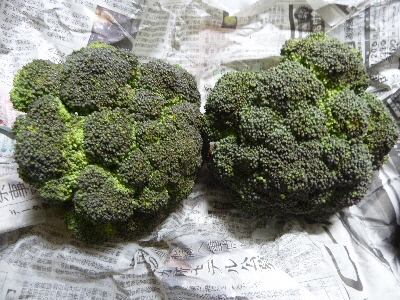
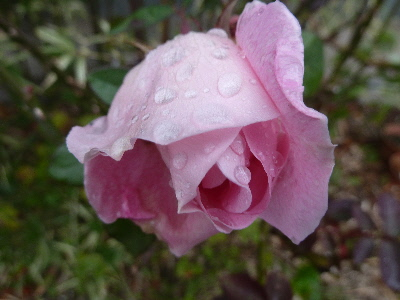

ジャガイモの芽が伸びていました。
2017/01/15
しばらくジャガイモを見ていなかったら、芽が伸びていました。

近頃は冬野菜の収獲が多いので、保存が効くジャガイモは気にしていませんでした。
定期的に見て食べないといけませんね。
2017/01/15
しばらくジャガイモを見ていなかったら、芽が伸びていました。

近頃は冬野菜の収獲が多いので、保存が効くジャガイモは気にしていませんでした。
定期的に見て食べないといけませんね。
2017/01/15
雪が降ったので、作物が埋まってしまいました。

寒いので、今日は外仕事はお休みです。
2017/01/08
採れ始めの頃はブロッコリーが大きくていいな。
収獲するのが楽ちんです。

脇芽から出るようになるとドンドン小さくなっていきます。
2017/01/08
四季咲きの薔薇がちょうどいい色合いでした。

この薔薇は枝を伸ばしっぱなしにしてたので、花が高い位置で咲いています。
ちゃんと剪定して育てないといけませんね。
過去の日記
畑仕事じゃないよ。